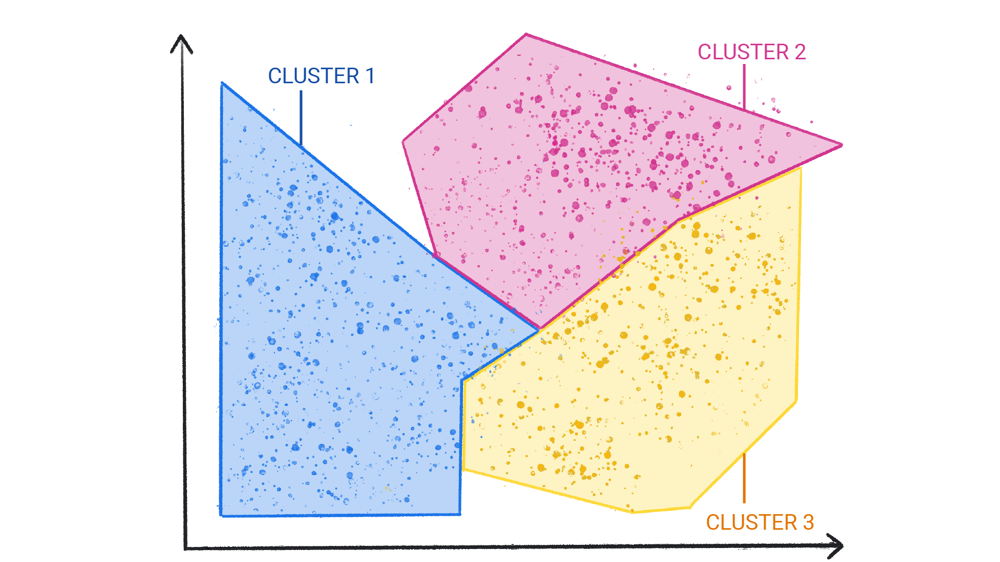

Welcome to Introduction to Machine Learning! This course introduces machine learning (ML) concepts. This course does not cover how to implement ML or work with data.
Learning objectives:
Machine learning (ML) powers some of the most important technologies we use, from translation apps to autonomous vehicles. This course explains the core concepts behind ML.
ML offers a new way to solve problems, answer complex questions, and create new content. ML can predict the weather, estimate travel times, recommend songs, auto-complete sentences, summarize articles, and generate never-seen-before images.
In basic terms, ML is the process of training a piece of software, called a model, to make useful predictions or generate content from data.
For example, suppose we wanted to create an app to predict rainfall. We could use either a traditional approach or an ML approach. Using a traditional approach, we'd create a physics-based representation of the Earth's atmosphere and surface, computing massive amounts of fluid dynamics equations. This is incredibly difficult.
Using an ML approach, we would give an ML model enormous amounts of weather data until the ML model eventually learned the mathematical relationship between weather patterns that produce differing amounts of rain. We would then give the model the current weather data, and it would predict the amount of rain.
ML systems fall into one or more of the following categories based on how they learn to make predictions or generate content:
Supervised learning models can make predictions after seeing lots of data with the correct answers and then discovering the connections between the elements in the data that produce the correct answers. This is like a student learning new material by studying old exams that contain both questions and answers. Once the student has trained on enough old exams, the student is well prepared to take a new exam. These ML systems are "supervised" in the sense that a human gives the ML system data with the known correct results.
Two of the most common use cases for supervised learning are regression and classification.
A regression model predicts a numeric value. For example, a weather model that predicts the amount of rain, in inches or millimeters, is a regression model.
See the table below for more examples of regression models:
| Scenario | Possible input data | Numeric prediction |
|---|---|---|
| Future house price | Square footage, zip code, number of bedrooms and bathrooms, lot size, etc. | The price of the home. |
| Future ride time | Historical traffic conditions gathered from smartphones, traffic sensors, ride-hailing, etc. | The time in minutes and seconds to arrive at a destination. |
Classification models predict the likelihood that something belongs to a category. Unlike regression models, whose output is a number, classification models output a value that states whether or not something belongs to a particular category. For example, classification models are used to predict if an email is spam or if a photo contains a cat
Classification models are divided into two groups: binary classification and multiclass classification. Binary classification models output a value from a class that contains only two values, for example, a model that outputs either rain or no rain.
Multiclass classification models output a value from a class that contains more than two values, for example, a model that can output either rain, hail, snow, or sleet.
Unsupervised learning models make predictions by being given data that does not contain any correct answers. An unsupervised learning model's goal is to identify meaningful patterns among the data. In other words, the model has no hints on how to categorize each piece of data, but instead it must infer its own rules.
A commonly used unsupervised learning model employs a technique called clustering. The model finds data points that demarcate natural groupings.

Figure 1. An ML model clustering similar data points.
Figure 2. Groups of clusters with natural demarcations.

Figure 3. An ML model clustering similar weather patterns.

Figure 4. Clusters of weather patterns labeled as snow, sleet, rain, and no rain.
Clustering differs from classification because the categories aren't defined by you. For example, an unsupervised model might cluster a weather dataset based on temperature, revealing segmentations that define the seasons. You might then attempt to name those clusters based on your understanding of the dataset.
Reinforcement learning models make predictions by getting rewards or penalties based on actions performed within an environment. A reinforcement learning system generates a policy that defines the best strategy for getting the most rewards.
Reinforcement learning is used to train robots to perform tasks, like walking around a room, and software programs like AlphaGo to play the game of Go.
Generative AI is a class of models that creates content from user input. For example, generative AI can create novel images, music compositions, and jokes; it can summarize articles, explain how to perform a task, or edit a photo.
Generative AI can take a variety of inputs and create a variety of outputs, like text, images, audio, and video. It can also take and create combinations of these. For example, a model can take an image as input and create an image and text as output, or take an image and text as input and create a video as output.
We can discuss generative models by their inputs and outputs, typically written as "type of input"-to-"type of output." For example, the following is a partial list of some inputs and outputs for generative models:
The following table list examples of generative models, their input, and an example of their possible output: